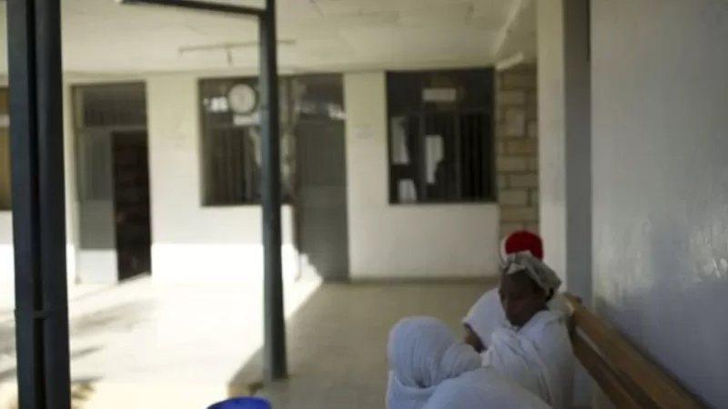
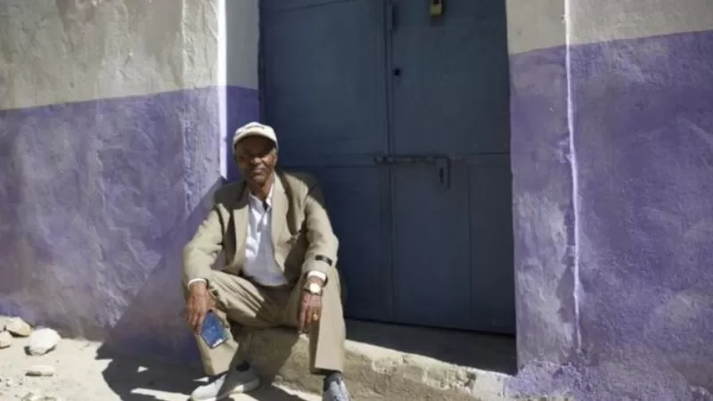
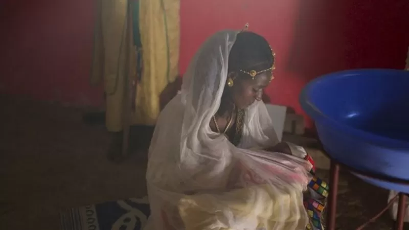

"ቀብር ከሩቁ እናይ ነበር" የኢትዮጵያና የኤርትራ ድንበር ነዋሪዎች ታሪክ
29 ሚያዝያ 2022

"ቀብር ከሩቁ እናይ ነበር"
በርካታ ቤተሰቦች ሠርግ፣ ክርስትና፣ ቀብርና ሌሎችም ጉልህ ማኅበራዊ ክንውኖችን በጋራ ማሳለፍ ሳይችሉ ዓመታት ተቆጥረዋል። ወዳጅ ዘመዶቻቸውን ሳይሰናበቱ በሞት የተነጠቁትንም ቤቱ ይቁጠራቸው። አብርሓይ ገብረመድህን ኢትዮጵያዊ ፎቶ አንሺ ነው። ኤርትራ ይኖሩ የነበሩ ታማሚ አያቱ ሲያልፉ እንዳልተሰናበተ ይናገራል። "ቀብሩን ከሩቅ እያየን ከማዘን ውጪ ምርጫ አልነበረንም" ይላል። የኢትዮ-ኤርትራ ድንበር ከተከፈተ በኋላ አብርሓይ ሁለት ጊዜ ወደ ኤርትራ ሄዷል።
- link1
- link2
- link3
አብርሓይ፤ "የሁለቱን አገሮች ልጅ ነኝ" ይላል። ስሜቱን የሚጋሩ ጥቂት አይደሉም። በጦርነቱ ሳቢያ ወደ 100,000 የሚሆኑ ሰዎች ከሁለቱም ወገን ሞተዋል። በርካቶችም ከቤት ንብረታቸው ተፈናቅለዋል። ሆኖም ግን የሁለቱ አገራት ዜጎች ማኅበራዊ፣ ባህላዊም ትስስር አላቸው። የዘፈር አያት አቶ ገብረክርስቶስ ካህሳይ፤ "ፀቡ የመሪዎች እንጂ የሕዝቡ አልነበረም" ይላሉ።
የተከፈተው ድንበር ዳግመኛ የመዘጋቱ ነገር
በሁለቱ አገሮች ጦርነትና ለዓመታት ድንበር በመዘጋቱ ሳቢያ ምጣኔ ሃብታዊ ጫና የደረሰባት ዛላምበሳ፤ ድንበር ሲከፈት ማገገም ጀምራ ነበር። ነጋዴዎች በነፃነት መንቀሳቀስ ጀምረው እንደነበርም ይታወሳል። ሆኖም ግን ድንበሩ ከተከፈተ ከወራት በኋላ ድጋሚ ተዘግቷል። በወቅቱ ድንበሩ የተዘጋበት ምክንያት በይፋ አልተገለጸም። ሁለቱም አገራት መፍትሔ ለማበጀት እየሞከርን ነው ቢሉም እስካሁን ስምምነት ላይ አልተደረሰም። የኢትዮጵያና ኤርትራ ግንኙነት ኢኮኖሚያዊ ትርፍ? እንቅስቃሴ አልባዋ ምጽዋ በእርግጥ ድንበሩ ላይ እንደቀድሞው ወታደራዊ ጥበቃ አይደረግም። ተሽከርካሪ ከአንዱ አገር ወደ ሌላው እንዲገባ ባይፈቀድም፤ ነጋዴዎች በእግር ድንበር እያቋረጡ መገበያየት ቀጥለዋል። አንዲት ኤርትራዊት ትልቅ የእንጨት ጠረጴዛ በጀርባዋ ተሸክማ ለሦስት ሰዓት በእገር ተጉዛ ቤቷ መድረሷን የቢቢሲ ዘጋቢ አስተውሏል። ድንበሩ ከመከፈቱ በፊት ኤርትራ ውስጥ ገበያ ለመሄድ አምስት ሰዓት መጓዝ እንደነበረባትም ተናግራለች።
ለህክምና ዛላምበሳ የሚሄዱት ኤርትራውያን
በዛላምበሳ ጤና ተቋም ህክምና ለማግኘት ኤርትራውያን ይመጣሉ። ድንበሩ ከተዘጋ በኋላ የታካሚዎች ቁጥር ቢቀንስም አሁንም በእግር ወደ ኢትዮጵያ የሚያቀኑ አሉ። ዶ/ር ሳምራዊት በርሄ እንደሚሉት፤ ኢትዮጵያውያንም ኤርትራውያንም እኩል የህክምና አገልግሎት ያገኛሉ። ከታካሚዎቹ ግማሹ ወደ ዛላምበሳ የሚመጡት፤ ኤርትራ ከሚገኘው ሀኪም ቤት የኢትዮጵያው ስለሚቀርባቸው ነው። የተቀሩት ደግሞ የተሻለ ህክምና እናገኛለን ይላሉ።
በርካታ ሴቶች የእርግዝና መቆጣጠሪያ ለማግኘት ወደ ክሊኒካቸው እንደሚሄዱም ዶ/ር ሳምራዊት ይናገራሉ። ኤርትራ ውስጥ መሰል የሥነ ተዋልዶ ጤና አገልግሎት ለማግኘት የባሎች ፍቃድ እንደሚያስፈልግ እና የእርግዝና መቆጣሪያ ባልና ሚስት በጋራ መግዛት እንዳለባቸው መስማታቸውን ዶክተሯ ይናገራሉ። "ብዙ ሴቶች በነዚህ ክልከላዎች ምክንያት እዚህ መምጣት እንደሚመርጡ ይነግሩናል" ሲሉም ያክላሉ።
"ወንድማማቾች ነን አንነጣጠልም"
ዛላምበሳ ወስጥ ግንባታ ላይ ያሉ ቤቶች ይስተዋላሉ። ድንበሩ ሲከፈት ብዙ ነጋዴዎች ወደ አገሪቱ መጥተው ሥራ ጀምረዋል። ከነዚህ አንዱ አቶ ፍስሀዬ ኃይሉ ናቸው። ለ13 ዓመት የፖለቲካ እስረኛ የነበሩት አቶ ፍስሀዬ አገራቸውን ጥለው ኢትዮጵያ እየኖሩ ነው። "ነገሮች እየተስተካከሉ ሲመጡ መሬት ገዛሁ" የሚሉት አቶ ፍስሀዬ ዛላምበሳ ውስጥ ባለ ሦስት ህንጻ ሆቴል እየሠሩ ነው። ሆቴሉ ሲጠናቀቅ 'ሁለቱ ወንድማማቾች' ብለው የሚሰይሙበትን ምክንያት ሲገልጹም "ወንድማማቾች ነን፤ አንነጣጠልም" ይላሉ። የሁለቱ አገራት አብሮነት የዘወትር ምኞታቸው መሆኑንም ያክላሉ።
የዘፈር ልጅ ክርስትና
ዘፈር ሱልጣን ለመጀመሪያ ልጇ ክርስትና ሽር ጉድ እያለች ነው።
አዲግራት የሚገኘው ቤቷ ውስጥ ሹሩባ እየተሠራች፣ የሠርጓን ቪድዮ ትመለከታለች። "ሠርጋችን የኢትዮጵያ እና የኤርትራ ድንበር የተከፈተ ሰሞን ስለነበር በደስታ ላይ ደስታ ጨምሮልናል" ትላለች። ሰላምም ጦርነትም በሌለበት ሁኔታ ለዓመታት የዘለቁት ኢትዮጵያ እና ኤርትራ ድንበራቸውን ሲከፍቱ ቤተሰብ፣ ዘመዳሞች፣ ጓደኛሞችም ዳግመኛ ለመተያየት በቅተዋል። በዘፈር ሠርግ ላይ ኢትዮጵያዊም ኤርትራዊም ዘመዶቿ ተገኝተዋል። የልጇ ክርስትና እንደ ሠርጓ የደመቀ እንደሚሆንም ተስፋ ታደረጋለች። ክርስትናው የሚካሄደው የዘፈር እና የባለቤቷ ዘርዓይ ቤተሰቦች በሚኖሩበት ዛላምበሳ ነው። ዛላምበሳ ውስጥ ከቤተሰቡ የተነጣጠለ ብዙ ሰው ነው።
የዘፈር ልጅ ክርስትና ላይ ኢትዮጵያውያን እና ኤርትራውያን ዘመዶቿም ተገኝተዋል። ባለቤቷ ዘርዓይ ከምጽዋ የመጣች የአጎቱን ልጅ ለዘመድ አዝማድ እያስተዋወቀ ነበር። ሠርጉ ላይና የልጁን ክርስትና በመታደሟም ደስተኛ ነው። "ከሠርጉ ጀምራ አብራኝ መሆኗ ፍቅራችንን፣ አንድነታችንን እና ባህላችንን ያሳያል" ይላል። እሷም ተመሳሳይ አስተያየት ነው ያላት። ቀድሞ የትኛው ዘመድ ሕይወቱ እንዳለፈ ለማወቅ እንኳን እንደማይችሉና ድንበሩ ሲከፈት ግን ነገሮች መለወጣቸውን ትናገራለች። "ድንበሩ ሳይከፈትና አሁን ያለው ልዩነት የሰማይና የመሬት ያህል ነው" ትላለች። ዘፈር እንደምትለው፤ ድንበሩ በድጋሚ በመዘጋቱ የልጇ ክርስትና ላይ የተገኙ ኤርትራውያን ቁጥር ከሠርጓ አንጻር ትንሽ ነው። "ድንበሩ እንደተዘጋ ከቀረ ወደፊት መቀጠል አንችልም፤ አሳሳቢ ነው" ትላለች።